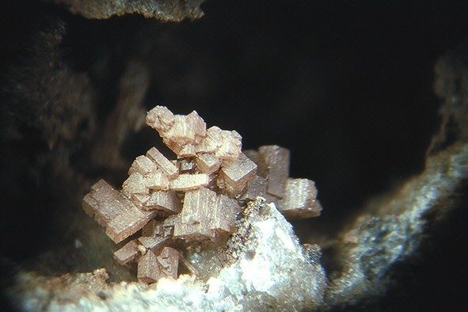
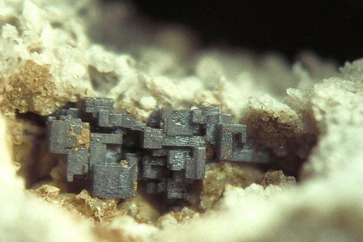
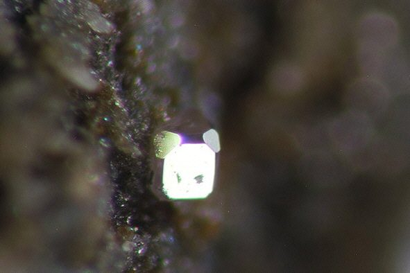
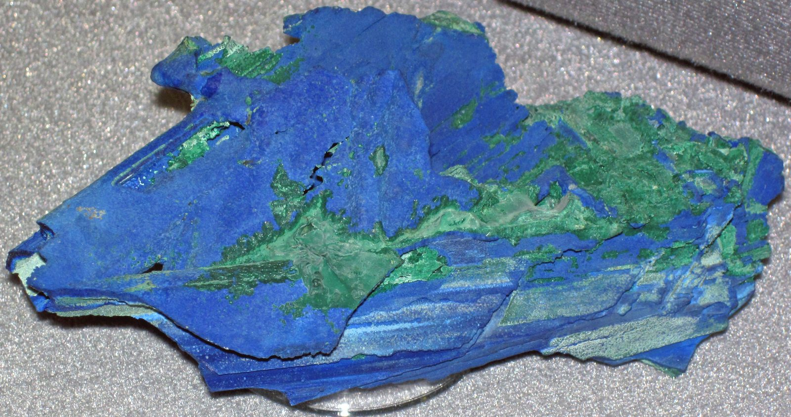
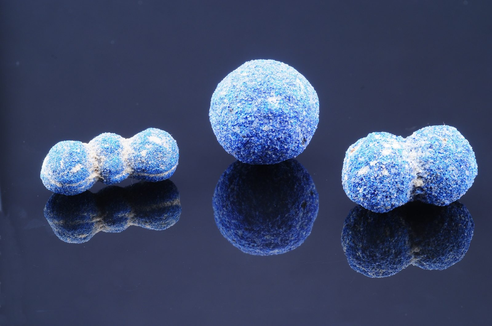
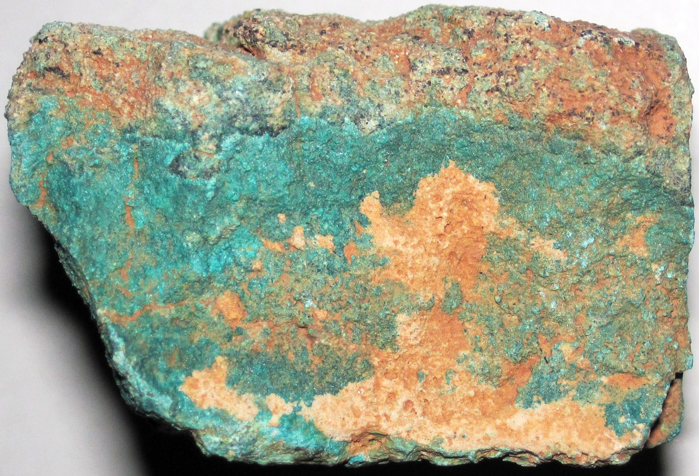
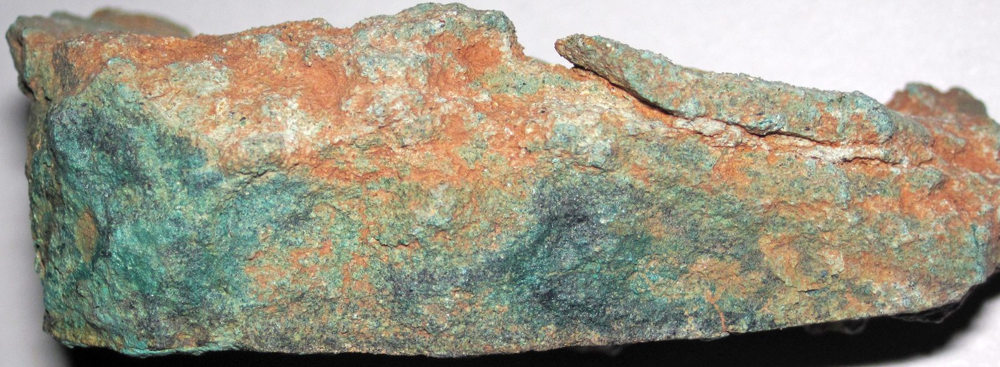
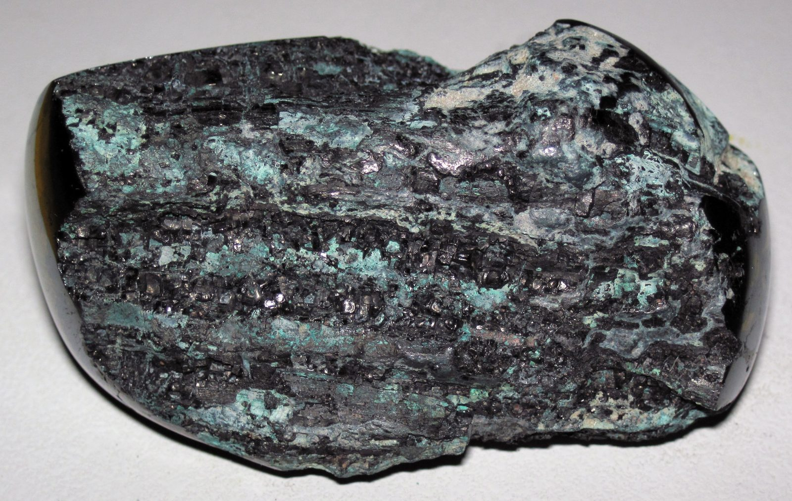
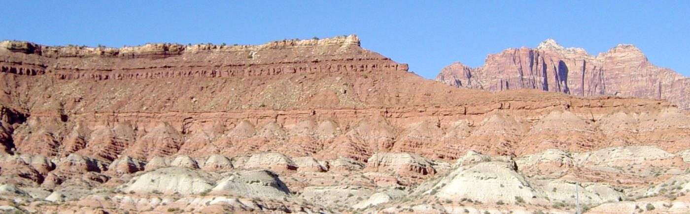

Field identification · positive cues
What to look for
At Silver Reef, dull chlorargyrite is easy to miss. Train on copper paints, plant-fragment replacements,
bedding/fracture concentrates, and honest reference AgCl plates—then verify locality before claiming reef ore.
Silver Reef · good sign
Copper paints on reef sandstone
Silver Reef Mining District · UGS GeoSights
Best published hand-specimen view of what prospectors could actually see: blue azurite and green malachite marking otherwise drab silver chloride rock.
Outcrop host

Springdale Sandstone reef ledges
Silver Reef · Washington County, Utah
Ore concentrates in these resistant Springdale beds—search bedding planes, fractures, and organic trash lenses, not every red cliff.
Reference · Frisco, UT

Horn silver hand specimen (Utah AgCl)
Horn Silver Mine, Frisco · GeoDIL 192 · ~5 cm
Same species as >90% of Silver Reef silver. Note the drab brown chloride—this is what “rich” AgCl often looks like in daylight.
Reference · Frisco, UT

Second AgCl plate, alternate lighting
Horn Silver Mine, Frisco · GeoDIL 189
Use two lighting/background plates to learn that chlorargyrite is not always metallic and is easy to confuse with iron oxides until tested.
Reference · crystal habit

Chlorargyrite crystals (magnified habit)
Theuerdank Mine, Harz, Germany · 5 mm field
Shows free-grown AgCl crystal form. Silver Reef ore is usually disseminated—not pocket crystals—so treat this as species ID training only.
Reference · crystal habit

Blue-grey AgCl aggregates
St. Andreasberg, Germany · ~4 mm
Color can lean blue-grey on quartz. Still not a reef sandstone texture—useful for recognizing chloride, not for matching reef matrix.
Reference · crystal habit

AgCl crystal faces (close scale)
St. Andreasberg, Germany · 4 mm field
Edge faces help when examining rich chloride under a loupe. Reef ore rarely shows this openly.
Reference · SW Utah Cu
Azurite–malachite color board
Apex Mine, St. George · not Silver Reef
Train your eye on saturated blue/green copper carbonates so you can spot weaker versions on reef sandstone.
Reference · SW Utah Cu

Second lighting on copper carbonates
Apex Mine, St. George
Alternate angle/lighting of the same association—helps separate true Cu paints from iron stains under field light.
Museum · Utah

Museum plate: azurite on malachite
San Juan County, Utah · MNHN Paris
High-resolution botryoidal azurite on malachite crust—species standard, not reef matrix.
Reference · La Sal, UT

Azurite spheroids (Utah plateau Cu)
La Sal district, Utah
Spheroidal azurite habit common in Colorado Plateau copper zones—compare with reef “dots” on sandstone.
Reference · Utah Cu in sandstone

Malachite in Utah sandstone country
Salina Canyon, Sevier County
Green copper carbonate on rock surfaces—good color match for reef malachite stains, different structural setting.
Reference · Utah Cu veins

Fracture-following copper stain
Salina Canyon, Utah
Shows Cu minerals tracking surfaces/fractures—the geometry to seek on Springdale bedding and joints.
Reference · plant Cu association

Copper replacing plant tissue
Chinle Fm., Nacimiento Mine, New Mexico
Analog for why reef ore hugs plant fragments: organics reduce/precipitate metals. Locality is Chinle NM—not Silver Reef.
Reference · U–V on wood

Yellow U–V on carbonized wood
St. George area museum plate
District ores included uranium–vanadium with organics; yellow carnotite-on-wood is a supporting cue, not a silver assay.
Stratigraphy · Springdale labeled

Where Springdale sits in the stack
Regional Glen Canyon Group section
Outcrop-scale orientation: Springdale forms resistant red cliffs—the reef ore host interval in the district.
District map
Concentrate search on the four reefs
UGS GeoSights map
White, Buckeye, Butte, East—ore is a concentration story on these Springdale ridges, not “any red sandstone nearby.”


_over_Kayenta_Formation_(Upp._Triassic-Lower_Jurassic),_southern_Zion_Canyon,_sw_Utah_1.jpg){kind=link}
_(GeoDIL_number_-_192).jpg){kind=link}
_(GeoDIL_number_-_189).jpg){kind=link}
_1_(30373196201).jpg){kind=link}

_1.jpg){kind=link}